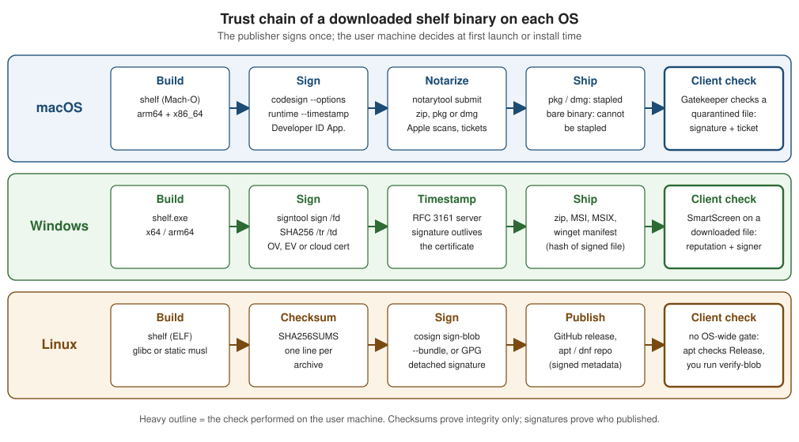

Signing, Notarization & OS Trust
|
This content was generated with the assistance of AI and should be verified against the official documentation before being relied on in production. |
A command-line tool that someone downloads runs with the privileges of the person who starts it, so each operating system tries to answer two questions before or while it runs: has the file been altered since the publisher built it, and does anyone vouch for the publisher? The answers differ a lot. macOS ties them together with a signature, an Apple notarization ticket and Gatekeeper. Windows uses an Authenticode signature, a timestamp and SmartScreen reputation. Linux has no operating-system gate for a downloaded executable at all; trust comes from the package manager and from signatures and checksums that the user or a script checks.
This page covers the three, with the Bookshelf shelf tool as the running example. It was written against the Apple
documentation for notarization and the hardened runtime, the SignTool reference (page updated 2026-10-05), the
Microsoft Defender SmartScreen overview, the Sigstore cosign documentation, the SLSA 1.0 specification, the Debian
Secure APT wiki page and the DNF configuration reference, all read on 2026-10-25. The macOS commands that need no
paid account (ad hoc signing, codesign inspection, pkgbuild, hdiutil, stapler on an unnotarized file, the
quarantine attribute) were run on macOS with Apple clang and the Xcode command line tools, and their output is shown.
The commands that need a Developer ID certificate, an Apple notary account, a Windows code-signing certificate or a
GitHub Actions run (Developer ID signing, notarytool, productsign, signtool, cosign in CI) were not run while
the page was written; they follow the official documentation linked after each example.
The app-bundle side of macOS (Developer ID certificates, entitlements, Xcode archives, DMG layout) is on Distributing Mac Apps with Developer ID and Notarization and is not repeated here. The Windows side of packaged apps (MSIX, certificate choices, Artifact Signing in GitHub Actions) is on MSIX Packaging & Signing. Checksums, cosign and GitHub artifact attestations as a release practice are introduced in Packaging & Distribution and the verification recipe is in the "Signed releases" section of Security. This page adds what is specific to command-line binaries. The build side (universal binaries, cross-compilation, the pipeline that produces the files to sign) is on Native Binaries & Cross-Compilation, and the packaging channels that consume signed files are on Native Packages & Installers.
The trust chain on each platform

The heavy-outlined box in each row is the check that happens on the user’s machine. On macOS and Windows it is done by the operating system without being asked; on Linux the equivalent is done by the package manager, or by the user.
| Question | macOS | Windows | Linux |
|---|---|---|---|
Who vouches for the publisher? |
A Developer ID certificate issued by Apple to a Developer Program member |
A code-signing certificate from a public CA, or a certificate issued through Microsoft Artifact Signing |
A GPG key (distribution repositories) or a Sigstore identity (cosign); nothing is built into the kernel |
Does a second party scan the file? |
Yes: Apple’s notary service, which returns a ticket |
Reputation service: SmartScreen judges the file hash and the signer certificate |
No, apart from whatever the distribution’s maintainers do |
What survives going offline? |
A stapled ticket (not possible for a bare binary); the signature itself |
The signature and its timestamp |
Whatever the user verified at download time |
Who enforces it at first launch? |
Gatekeeper, for files that carry the quarantine attribute |
SmartScreen, for files downloaded from the internet |
Nobody; the package manager enforces it at install time |
Three words are easy to mix up, and the rest of the page depends on them.
-
A checksum (SHA-256) shows that a file is identical to the one the publisher listed. It says nothing about who the publisher is unless the list is itself signed or fetched over a channel you trust.
-
A signature binds the file contents to a key or certificate, so a change to the file is detected and the signer is named. It does not say the software is harmless.
-
Notarization and reputation are judgments by a third party (Apple’s notary service, Microsoft’s SmartScreen) about a signed file. They are an addition to a signature, never a replacement for one.
macOS
What the system checks
Gatekeeper checks software that came from outside the App Store the first time it is opened. By default, downloaded
software must be signed by a registered developer and notarized by Apple, and Gatekeeper asks for user approval before
downloaded software opens for the first time. Apple’s platform security guide says Gatekeeper "tracks the provenance of files written by
downloaded software": a quarantine-aware application such as a browser marks what it downloads with the
com.apple.quarantine extended attribute, and that mark is what makes the first-launch check apply. A person who is
sure of the source can override a block in System Settings, Privacy & Security, with the Open Anyway button.
Source: Apple Platform Security — Gatekeeper and runtime protection and Apple Support — Safely open apps on your Mac.
Two consequences matter for a command-line tool. First, the check is attached to the way a file arrived, not to its
type: a binary fetched with curl is not quarantined, because curl does not set the attribute. The attribute is just
an extended attribute, and the example below shows it by setting it by hand.
$ curl -s file://$PWD/shelf.c -o got.c
$ xattr -l got.c
com.apple.provenance:
$ xattr -w com.apple.quarantine "0083;5f000000;Safari;" shelf
$ xattr -l shelf
com.apple.provenance:
com.apple.quarantine: 0083;5f000000;Safari;
$ xattr -d com.apple.quarantine shelfThe file written by curl carries no com.apple.quarantine attribute (it shows only com.apple.provenance, an
attribute that Apple’s public documentation does not describe); the attribute appears on shelf only because the example sets it by hand
to the kind of value a browser would write. Do not mark files this way as a test of the real flow: download a build with Safari or Chrome on a clean Mac, as
described under Verifying what a user sees. The Apple documentation describes the quarantine mechanism only in
general terms and does not document how Gatekeeper treats a bare command-line tool that a user starts from a shell.
Second, whatever the details, Apple’s rules for Developer ID software apply to command-line tools too: the
notarization requirements below name "app and command line targets".
Every Mach-O is signed, but not trusted
On Apple silicon, the linker signs what it produces. Compiling the shelf example produced a valid, ad hoc, linker-signed
binary with no certificate behind it.
$ clang -o shelf shelf.c
$ codesign -dv --verbose=2 shelf
Executable=/work/shelf
Identifier=shelf
Format=Mach-O thin (arm64)
CodeDirectory v=20400 size=382 flags=0x20002(adhoc,linker-signed) hashes=9+0 location=embedded
Signature=adhoc
Info.plist=not bound
TeamIdentifier=not set
Sealed Resources=none
Internal requirements=noneThat signature lets the kernel run the file, and it detects changes, but TeamIdentifier=not set shows no identity
vouches for it. Gatekeeper’s policy assessment agrees:
$ spctl --assess --type execute -vv shelf
shelf: rejectedAn ad hoc build is correct for development and for swift build output that you run yourself. It is not something to
ship to other people. man codesign and man spctl are the reference; Apple’s public documentation pages read for
this page do not describe the linker signature.
Signing for distribution
Notarization imposes a short list of requirements on the software you submit. For a command-line tool they are: a valid
code signature on every executable, a Developer ID Application certificate (not a Mac Distribution, ad hoc, Apple
Development or local certificate), the hardened runtime enabled for "app and command line targets", a secure
timestamp in the signature, no com.apple.security.get-task-allow entitlement set to true, and linking against the
macOS 10.9 or later SDK.
$ codesign --force --options runtime --timestamp \
--identifier com.example.shelf \
--sign "Developer ID Application: Example Corp (TEAMID1234)" \
shelfSource: Apple — Notarizing macOS software before distribution and Apple — Customizing the notarization workflow. This command needs a Developer ID certificate in the keychain and was not run while the page was written.
The same command with --sign - (ad hoc) was run, to show what each option changes. Without --identifier, codesign
derives an identifier from the file name and a hash (shelf-55554944ed39c0e65496385ea1dadb0b279bf190); with it, the
identifier is stable across builds, which is what a requirement or an entitlement lookup should rely on.
$ codesign --force --options runtime --identifier com.example.shelf --sign - shelf
$ codesign -dv shelf 2>&1 | grep -i "identifier\|flags"
Identifier=com.example.shelf
CodeDirectory v=20500 size=274 flags=0x10002(adhoc,runtime) hashes=3+2 location=embedded
$ codesign --verify --strict --verbose=2 shelf
shelf: valid on disk
shelf: satisfies its Designated RequirementThe runtime in flags confirms that the hardened runtime is on. On a universal binary, sign after lipo has produced
the final file (see Command-Line Tools in Swift for a universal build), because
any later change invalidates the signature.
codesign option |
Effect |
|---|---|
|
The signing identity; |
|
Enables the hardened runtime, required for notarization. |
|
Adds the secure timestamp that notarization requires, so the signature stays valid after the certificate expires. |
|
Sets the signing identifier instead of deriving one. |
|
Embeds an entitlements property list (only the exceptions below). |
|
Replaces an existing signature, for example the linker signature. |
The options table summarizes the flags used on this page; man codesign lists the others.
The hardened runtime and what a tool may need to switch off
The hardened runtime, together with System Integrity Protection, protects the runtime integrity of a process against code injection, library hijacking and memory tampering. It does not affect most tools. The few things it disallows can be re-enabled one at a time with entitlements, which apply to executables; shared libraries and in-process plug-ins inherit the entitlements of their host. Apple’s advice is to use only the entitlements that are absolutely necessary.
| Entitlement | When a command-line tool needs it |
|---|---|
|
The tool generates machine code at run time (a JIT such as a JavaScript or WebAssembly engine inside a CLI). |
|
The tool makes writable and executable memory without |
|
The tool loads plug-ins or libraries that are not signed by the same team. |
|
The tool must honour the |
|
The tool is a debugger that attaches to other processes. |
|
Disables all code-signing protections while launching and running; avoid it. |
A plain shelf needs none of them. A tool built on a runtime that generates code (the JVM, Node.js, a Python with a
JIT) needs at least allow-jit, and the entitlements file is passed with --entitlements.
Source: Apple — Hardened Runtime.
Hardened-runtime protections also change how a tool behaves under a debugger and with injection tools, and
com.apple.security.get-task-allow must not be set to true in a notarized build. The Apple notarization page names it
as a reason for rejection.
Notarizing
The notary service accepts disk images (UDIF), signed flat installer packages and ZIP archives. It does not accept a
bare executable file, so a standalone tool is archived first. ditto is the archiver the Apple examples use for bundles; for a single file
it produces a ZIP that notarytool accepts.
$ ditto -c -k --keepParent shelf shelf.zip
$ xcrun notarytool store-credentials shelf-notary --key AuthKey_ABC123.p8 \
--key-id ABC123 --issuer 12345678-90ab-cdef-1234-567890abcdef
$ xcrun notarytool submit shelf.zip --keychain-profile shelf-notary --wait
$ xcrun notarytool log <submission-id> --keychain-profile shelf-notary notary-log.jsonSource: Apple — Customizing the notarization workflow.
These commands need a paid Apple Developer Program membership and network access to Apple’s notary service and were not run while the
page was written. The page above also describes app-specific passwords and the store-credentials keychain item;
the API-key form shown here is the one that CI uses, and the credential options are explained on
Distributing Mac Apps with Developer ID and Notarization. The installed
notarytool was version 1.1.3 (42).
The service generates a ticket for the top-level file and for each nested file. Apple says to check the log even when
notarization succeeds, because it can contain warnings to fix before the next submission. Notarization completes for
most software within minutes. An Invalid result is resolved from the log; Apple’s
Resolving common notarization issues
page lists the usual causes (missing hardened runtime, missing secure timestamp, an unsigned nested binary, a debug entitlement).
Why a bare tool cannot be stapled, and what to do instead
Stapling attaches the notarization ticket to a file, so Gatekeeper can find it with no network connection and future copies carry it. Apple’s documentation states the limit directly: you can staple a ticket to an app, bundle, disk image or flat installer package; "while you can notarize a ZIP archive, you can’t staple to it directly"; and "although tickets are created for standalone binaries, it’s not currently possible to staple tickets to them."
The run below used an unnotarized shelf, so the failure shown is the "record not found" one; it is not a demonstration
of the stapling limit, which comes from the documentation and not from this output.
$ xcrun stapler staple shelf
Processing: /work/shelf
CloudKit query for shelf (2/f64e720dd58f9704453be928a85e2745ba417da9) failed due to "Record not found".
Could not find base64 encoded ticket in response for 2/f64e720dd58f9704453be928a85e2745ba417da9
The staple and validate action failed! Error 65.There are three honest options, in order of how well they behave offline.
| Distribute as | How | What the user gets |
|---|---|---|
A signed, notarized and stapled installer package ( |
Install the signed tool to |
The ticket travels in the file; Gatekeeper needs no network. This is the right choice when the tool installs system-wide, runs scripts or ships a launch daemon (see |
A signed, notarized and stapled disk image ( |
Put the signed tool in an image, sign the image with the Developer ID Application certificate, notarize it, staple it |
The ticket travels with the image. The user drags the tool out; the copy outside the image is a bare binary again, so its own signature is what remains |
A signed, notarized ZIP or tarball of the bare binary |
Sign the binary, submit the archive, ship the archive without stapling |
Gatekeeper looks the ticket up online, as Apple’s documentation describes for notarized software without a stapled ticket. There is no ticket in the file for an offline machine |
The reasoning behind the table is in Apple’s own text, which says that Gatekeeper finds the ticket online for any
notarized software, and that you "should also attach the ticket" with stapler so that "Gatekeeper can find the ticket even when a network
connection isn’t available". For a bare binary only the first half is possible.
Whichever container you ship, sign the tool inside it with Developer ID Application and the hardened runtime before you build the container. Apple’s guidance for a custom third-party installer is two rounds: notarize and staple the payload, then package it and notarize the installer.
A signed installer package, step by step
pkgbuild builds a flat component package from a directory that mirrors the install location. The commands below
(except productsign and notarytool) were run with an ad hoc signed tool, and the package was verified as unsigned.
$ mkdir -p root/usr/local/bin && cp shelf root/usr/local/bin/
$ codesign --force --options runtime --timestamp --identifier com.example.shelf \
--sign "Developer ID Application: Example Corp (TEAMID1234)" root/usr/local/bin/shelf
$ pkgbuild --root root --identifier com.example.shelf --version 1.0.0 \
--install-location / shelf-1.0.0.pkg
pkgbuild: Inferring bundle components from contents of root
pkgbuild: Wrote package to shelf-1.0.0.pkg
$ pkgutil --check-signature shelf-1.0.0.pkg
Package "shelf-1.0.0.pkg":
Status: no signature
$ productsign --sign "Developer ID Installer: Example Corp (TEAMID1234)" \
shelf-1.0.0.pkg shelf-1.0.0-signed.pkg
$ xcrun notarytool submit shelf-1.0.0-signed.pkg --keychain-profile shelf-notary --wait
$ xcrun stapler staple shelf-1.0.0-signed.pkg
$ xcrun stapler validate shelf-1.0.0-signed.pkgSource: Apple — Customizing the notarization workflow.
pkgbuild and pkgutil ran locally with the output shown; the Developer ID signing, productsign, notarization and
stapling steps need certificates and an account and were not run. A disk image is built the same way
(the hdiutil create command with -volname shelf, -srcfolder root/usr/local/bin and -format UDZO ran), then signed with
codesign and a Developer ID Application identity, and submitted and stapled like the package. Which certificate
signs which container (Application for apps and images, Installer for packages) is described on the Apple distribution
page linked at the top.
Verifying what a user sees
Three commands check a release before you publish it, and a final manual test confirms it.
$ codesign --verify --strict --verbose=2 shelf
$ codesign -dv --verbose=4 shelf 2>&1 | grep -i "flags\|TeamIdentifier\|Authority"
$ xcrun stapler validate shelf-1.0.0-signed.pkgThe spctl --assess command assesses the policy; for a notarized, correctly signed file it reports an accepted
source, and for the ad hoc shelf it reported rejected, as shown earlier. The only real test is the user’s path:
upload the container, download it with a browser onto a Mac that has never seen the file, and open it.
Homebrew, curl | sh and the quarantine mark
How a file reaches the disk decides whether Gatekeeper applies. A browser download is quarantined; a file written by
curl, tar or a package manager is not, and an installer script that downloads with curl leaves a tool that is not
subject to the first-launch check. That is not a reason to skip signing: the signature still identifies the build and can be verified by
codesign, and the same file is the one that passes Gatekeeper when someone later downloads it with a browser. The packaging channels and their signing
requirements are compared on Native Packages & Installers.
Windows
Authenticode and signtool
Windows code signing is called Authenticode. signtool.exe is installed with the Windows SDK in the Bin folder of the
SDK path (for example C:\Program Files (x86)\Windows Kits\10\bin\10.0.22621.0\x64\signtool.exe). It has four commands (catdb, sign,
timestamp, verify) plus remove, and returns exit code 0 for success, 1 for failure and 2 for completion with
warnings. Newer SDK builds require the digest algorithm explicitly: SignTool’s sign command needs /fd (the file
digest) and, when timestamping with /tr, /td (the timestamp digest). Microsoft recommends SHA256.
PS> signtool sign /fd SHA256 /tr http://timestamp.digicert.com /td SHA256 `
/n "Example Corp" shelf.exe
PS> signtool verify /pa /v shelf.exeSource: Microsoft — SignTool. These commands need a code-signing certificate and a Windows machine and were not run while the page was written. The timestamp URL is the one used in the Microsoft examples; use your certificate authority’s server.
signtool sign option |
Meaning |
|---|---|
|
File digest algorithm; required. |
|
RFC 3161 timestamp server and its digest algorithm. |
|
Selects the certificate by subject name (a substring); |
|
Automatically selects the best certificate; without it, |
|
Signs with a PFX file. A password on the command line ends up in history and in CI logs; prefer a certificate in a store or a cloud signer. |
|
Appends a signature, so a file can carry several (for example SHA-1 and SHA-256). |
|
Signs through a DLL that implements |
|
Generate or suppress page hashes for executables. |
For verification, signtool verify /pa uses the Default Authentication Verification Policy; without /pa it
uses the Windows Driver Verification Policy, which is the wrong one for an ordinary program. /tw warns when a signature has no
timestamp, and /all checks every signature of a file that has more than one. signtool remove /s strips a signature.
Timestamps
Without a timestamp, a signature is valid only while the signing certificate is. A timestamp from an RFC 3161 server
proves that the signature existed while the certificate was valid, so the file keeps verifying after the certificate expires. SignTool does not
timestamp unless /tr or /t is given, and if the timestamp request fails it produces only a warning, so a CI job must
check the result with signtool verify /pa /tw. The timestamp rules are the same for installers; see
Timestamping in the MSIX page.
SmartScreen and reputation
Microsoft Defender SmartScreen checks downloaded files against a list of reported malicious programs and against a list of files that are well known and downloaded frequently; if the file is not on that list, it shows a warning that advises caution. It also checks the digital signature used to sign a file. The page states the rule that matters for a new tool: if a URL, file, app or certificate has an established reputation, users do not see warnings; if there is no reputation, the item is treated as higher risk and the user sees one. SmartScreen protects against malicious files from the internet, not against files on network shares addressed with UNC paths.
What this means for shelf.exe:
-
A signature is necessary but does not make the first download quiet: reputation attaches to the file hash and to the signing certificate and builds with use. How reputation builds, the end of the EV bypass in 2024 and Smart App Control are covered, with their Microsoft sources, in Choosing a Certificate: OV, EV and SmartScreen and in Security & App Isolation.
-
Sign every release with the same identity so reputation carries from one version to the next, and sign every executable inside an archive or installer, not only the installer.
-
A false warning or block can be reported to Microsoft for review by submitting the file and selecting Microsoft Defender SmartScreen as the product.
-
Console tools launched from a terminal by a user who already has the file are mostly affected through the download step (the browser and the file’s origin), not through the command line itself. The Microsoft pages do not document a separate rule for console executables.
Cloud signing
Microsoft’s Artifact Signing (formerly called Trusted Signing) is a managed signing service.
It provides certificate lifecycle management inside FIPS 140-3 level 3 certified HSMs, integrates with developer
toolsets, supports external timestamping services and public-trust signing, and signs a digest so that your file
never leaves your machine. An account contains an identity validation and a certificate profile, and comes as a Basic
or a Premium SKU. For signtool it is used through the /dlib option. The GitHub Actions workflow, the prices and
the regions in which it is available are covered on the Azure Artifact Signing
section of the MSIX page; this page does not repeat them. Other vendors' cloud-HSM and token-based services work through
/dlib or through their own tools; the SignTool documentation lists the mechanism and not the vendors.
Installers, archives and managers
Sign the executable, then sign the container: an MSI or EXE installer with signtool, an MSIX with signtool and a
certificate whose subject matches the manifest publisher (see the MSIX page), and a ZIP of loose files cannot carry a signature of its own,
so the files inside must be signed. A winget manifest records the installer’s SHA-256 (InstallerSha256), so sign
first and hash afterwards; the policy on whether signing is required is on
Distribution Channels. Cross-compiling a Windows tool from Linux or macOS
is covered on Native Binaries & Cross-Compilation; signtool itself
runs only on Windows, and the SignTool documentation describes no other signer.
Linux
No operating-system gate
A downloaded ELF file starts when its execute bit is set, with no signature check. The kernel does not know about publishers. Linux distributions put trust in two places instead: the package manager checks signed repository metadata and package signatures when installing, and the user (or an install script) checks a signature or checksum that the project publishes. Everything on this page for Linux is therefore a convention a user must apply, not an enforcement that happens automatically, which is why the way you publish matters: the more of the chain a package manager checks, the fewer users skip it.
Checksums
Publish a SHA256SUMS file with every release and sign it, not the archives one by one, so that a user verifies one
signature and one file.
$ sha256sum shelf-1.0.0-linux-amd64.tar.gz shelf-1.0.0-linux-arm64.tar.gz > SHA256SUMS
$ sha256sum --check SHA256SUMS --ignore-missing
shelf-1.0.0-linux-amd64.tar.gz: OKA checksum proves the download is intact; it proves who built it only when the checksum file is itself signed or served over a trusted path.
The same file feeds package manager manifests, such as the Homebrew sha256 and the winget InstallerSha256. The tool
sha256sum is from GNU coreutils and was not run on this macOS host; macOS ships shasum -a 256 for the same job.
GPG detached signatures
GPG remains what distribution repositories use. A detached, ASCII-armored signature sits next to the file.
$ gpg --armor --detach-sign SHA256SUMS
$ gpg --verify SHA256SUMS.asc SHA256SUMSSource: Debian Wiki — SecureApt (the gpg -abs form for signing a Release file).
The gpg commands were not run while the page was written.
The project key’s fingerprint must be published on a channel separate from the download (the project site, a signed commit
or tag), otherwise a verified signature only shows that the file matches a key that came from the same place.
Sigstore cosign
Sigstore’s cosign sign-blob signs a file. The documentation recommends keyless signing, in which an ephemeral key is
tied to an OpenID Connect identity, and recommends a bundle (--bundle), which carries the verification metadata and
must be stored for verification. --yes bypasses confirmation prompts for unattended runs.
$ cosign sign-blob SHA256SUMS --bundle SHA256SUMS.sigstore.json --yes
$ cosign verify-blob SHA256SUMS --bundle SHA256SUMS.sigstore.json \
--certificate-identity "https://github.com/OWNER/shelf/.github/workflows/release.yml@refs/tags/v1.0.0" \
--certificate-oidc-issuer "https://token.actions.githubusercontent.com"Source: Sigstore — Signing blobs and Sigstore — Verifying signatures. These commands were not run while the page was written. The identity and issuer values in the verify command are an example for a GitHub Actions workflow and must be replaced; the cosign pages document the identity and issuer flags in general terms, and the GitHub-specific values come from the workflow’s own identity, as on the Security page.
Keyless verification is only as strong as the identity you ask for. Accepting any identity that Sigstore will certify is the same as accepting no publisher at all, so scripts must pin both the identity and the issuer.
Provenance with SLSA
The SLSA 1.0 specification describes provenance as a record of what entity built an artifact, the process it used and
its inputs. Its build track has levels: L0 (none), L1 (provenance exists, but is easy to bypass or forge), L2 (a
hosted build platform generates and signs the provenance) and L3 (a hardened platform isolates builds and protects the
signing secrets). GitHub artifact attestations, which gh attestation verify checks, are the practical way to
publish provenance for a GitHub release; the attestation links an artifact to its source and build and is not a
certificate that the artifact is safe. The commands are on
Packaging & Distribution.
Source: SLSA — Security levels.
Signed repositories: apt and dnf
For a .deb, apt checks a chain: the signed Release file lists the checksums of the Packages files, and those list
the checksum of every package. The Release file is signed with an OpenPGP key, and apt aborts when a check fails.
Trusted keys are kept as files in /etc/apt/trusted.gpg.d/ (the debian-archive-keyring package manages
Debian’s) and apt-key has been removed in Debian 13. For a third-party repository, the key is converted
to binary with gpg --dearmor and stored, for example under /usr/share/keyrings/; verifying that key is left to the
administrator. A publisher builds the metadata with apt-ftparchive and signs it:
$ apt-ftparchive release dists/stable > dists/stable/Release
$ gpg -abs -o dists/stable/Release.gpg dists/stable/ReleaseSource: Debian Wiki — SecureApt. The page is partly dated: it does not describe the inline-signed
InRelease file or the signed-by option for source entries, so check the current apt-secure(8) and sources.list(5)
manual pages before publishing a repository. The commands were not run while the page was written.
For RPM repositories, DNF has separate switches, all defaulting to False:
| DNF option | Effect |
|---|---|
|
Checks GPG signatures on packages from the repository. |
|
Checks GPG signatures on the repository metadata; its keys are stored separately for each repository. |
|
Checks signatures on package files installed from a local file. |
|
URLs of the key files used for those checks. |
Source: DNF Configuration Reference.
A published repository that ships gpgcheck=0 or omits the key gives users no verification, so the repository file
that your documentation tells users to install should set the checks on explicitly. Building .deb and .rpm files
with nfpm, hosting repositories and the Snap, AppImage and Nix channels are on
Native Packages & Installers.
A release pipeline for shelf
The three signing paths run on three different machines (a Mac, a Windows host and any Linux runner), which is why most projects use a release matrix. The shape is: build per target, sign on the host that can sign, collect the signed outputs, checksum and sign the checksum file, and publish.
# .github/workflows/release.yml (outline: not run while this page was written)
jobs:
macos:
runs-on: macos-latest
steps:
- run: swift build -c release --arch arm64 --arch x86_64
- run: codesign --force --options runtime --timestamp --identifier com.example.shelf
--sign "$DEVELOPER_ID_APP" .build/apple/Products/Release/shelf
- run: ditto -c -k --keepParent .build/apple/Products/Release/shelf shelf-macos.zip
- run: xcrun notarytool submit shelf-macos.zip --keychain-profile shelf-notary --wait
windows:
runs-on: windows-latest
steps:
- run: cargo build --release
- run: signtool sign /fd SHA256 /tr $env:TIMESTAMP_URL /td SHA256 /n "Example Corp" target\release\shelf.exe
publish:
needs: [macos, windows]
runs-on: ubuntu-latest
permissions: { id-token: write, contents: write }
steps:
- run: sha256sum shelf-* > SHA256SUMS
- run: cosign sign-blob SHA256SUMS --bundle SHA256SUMS.sigstore.json --yesKeep the certificates and the notary API key in the CI system’s secret store and give the job that uses them the smallest scope that works; the build, sign, package and publish pipeline as a whole is drawn on Native Binaries & Cross-Compilation. The workflow is an outline: the keychain import for the Developer ID certificate on a hosted macOS runner and the runner’s access to a Windows certificate are steps that each provider documents separately, and they are not shown here.
Pitfalls
| Pitfall | What to do |
|---|---|
Expecting |
It is documented as not possible. Staple a |
Shipping the ad hoc linker signature |
|
Signing, then modifying the file |
|
Forgetting |
Notarization requires the secure timestamp on macOS; on Windows the signature expires with the certificate. |
A debug entitlement in the release build |
|
Passing a PFX password or notary key on the command line |
It is visible in process lists and logs. Use the keychain profile, a certificate store or a cloud signer. |
Verifying with |
The default policy is the driver policy; ordinary programs need |
A new signing identity every release |
SmartScreen reputation attaches to the file and certificate and restarts when the identity changes. |
|
Users cannot verify what they install; publish the fingerprint out of band. |
Verifying a keyless signature without pinning the identity and issuer |
Anyone who can obtain a Sigstore certificate would pass. |
Treating a signature or an attestation as a safety certificate |
It identifies the publisher and the build. It does not say the code is harmless. |
Summary
-
macOS: sign with Developer ID Application, the hardened runtime and
--timestamp, notarize a ZIP,.pkgor.dmg, and staple the.pkgor.dmg. A bare Mach-O tool cannot be stapled; ship it inside a stapled container, or rely on the online ticket. -
Windows:
signtool signwith/fd SHA256,/trand/td SHA256, verify with/pa, sign every executable and installer, and expect a SmartScreen warning until reputation builds. -
Linux: publish and sign a
SHA256SUMSfile with cosign or GPG, publish provenance, and distribute through repositories whose metadata is signed and checked byaptordnf.